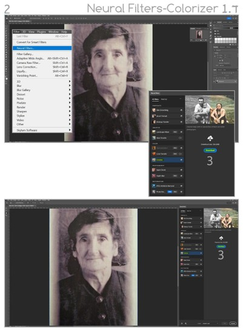
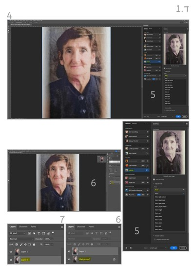
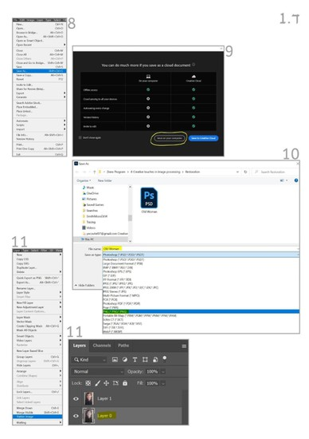
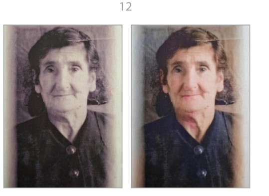
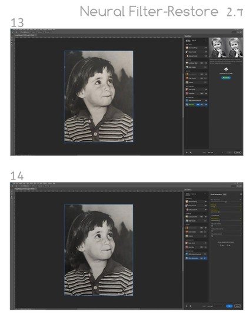
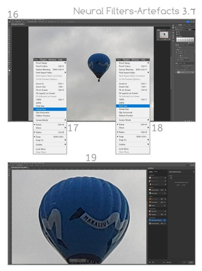
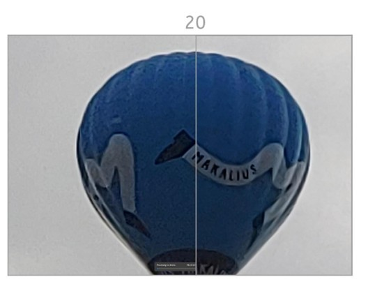

הצגת הנושא
בפרק זה נלמד להכיר כלי יצירה חשובים הנוגעים לצבעוניות התמונה, תיקוני איכות בגלל רזולוציית מקור נמוכה ויצירת אפקטים צבעוניים מיוחדים.
חשיבות הנושא
צבעוניות היא מהמרכיבים המרכזיים ביצירה הוויזואלית של תמונת הסטילס, הווידיאו והתמונה הפלקטית של עיצוב גרפי. הקולנוע הוא יצירה צבעונית מרהיבה. בסביבת תוכנות ההפקה של ADOBE, יש מערך דומה של כלים ליצירת מניפולציות צבעוניות מפריים בודד ועד רצף של פריימים קולנועיים. בפרק זה נכיר את מערך כלי היצירה הצבעוניים שמציעה תוכנת PS ודומים לה ימצאו גם במערכי היצירה של AE ו-PR.
תת-הנושאים ביחידה זו:
- ד.1 Neural Filter-colorize.
- ד.2 Neural Filter-Photo restore.
- ד.3 Neural Filter-Artefacts.
- ד.4 Adjustments-Bright/contrast.
- ד.5 Adjustments-Hue Saturation.
- ד.6 Adjustments-Photo filter.
- ד.7 Adjustments-Color Lookup.
מטרות אופרטיביות
התלמיד יכיר את מערכי העבודה ליצירות צבעוניות בתמונות ויישם כלי יצירה בתמונות של פריים בודד כקונספט לגישת עבודה יצירתית ביישום דומה בסרטים.
מושגים מרכזיים:
- מערך היצירה Neural Filter
- מערך היצירה Adjustments
ד.1 Neural Filter-colorize
- כניסה למרחב היצירה של חלון כלי היצירה Neural Filter. לפתיחת חלון הפילטר: Filter > Neural Filter.
- בחלון שנפתח (בגרסת 2023) תופיע רשימת Plugin שתוכלו לצרף למערך כלי היצירה על ידי הורדה באמצעות לחיצה על פקודת Download. הפילטר השימושי הראשון יהיה Colorizer, המאפשר לכם להוסיף צבעוניות לתמונות שחור-לבן (הורדה מתבצעת לכל פילטר רק פעם אחת).
- לאחר ההורדה ייפתח לכם חלון עבודה ובו מחוונים שונים שיאפשרו לכם לדייק את התוצאה המבוקשת בהפיכת תמונת שחור-לבן לתמונת צבע. משהגעתם לתוצאה המבוקשת, אשרו.
- עם האישור תופיע שכבה נוספת ובה התוצאה שקיבלתם.
- המירו את שכבת הרקע (המקורית) לשכבת עבודה ע"י לחיצה כפולה עם העכבר עליה ואישור החלון שעולה.
- שמרו את העבודה כקובץ PSD: File > Save as. בחלון שנפתח אתרו את התיקייה שבה תרצו לשמור את הקובץ ואשרו שמירה.
- שטחו את שתי השכבות לשכבה אחת באמצעות הדגשת אחת מהשכבות באמצעות לחיצה עם העכבר עליה ואז בצעו: Layer > Flatten Image. לאחר שהשכבה שוטחה והפכה לשכבת רקע ניתן יהיה לבצע שמירה נוספת לקובץ צפייה מסוג PNG.
שתי התמונות לפני צביעה ואחרי צביעה לשיפוטכם (ללא שימוש במחוונים).

ד.2 Neural Filter-Photo restore
- הורידו ב-Neural Filter את הפילטר Restore (על פי ההסבר הקיים).
- העלו תמונה כלשהי שזקוקה לשיקום ואשרו את ביצוע פעולת השחזור. השתמשו במחוונים כדי ללמוד על אפשרויות השחזור.
- צפו בשתי התמונות והשוו בין השמאלית לימנית.

ד.3 Neural Filter-Artefacts
- הורידו ב-Neural Filter את הפילטר Artefacts (לפי ההסבר הקיים). כדי להעריך את יתרונות הפילטר עליכם להעלות תמונה מפוקסלת מדי. כאשר אתם מעלים תמונה חשודה במידע פיקסלי פגום, השתמשו באחת משתי הפקודות המאפשרות להתבונן אל עומק הרזולוציה של התמונה וכך להעריך אם נחוצה לכם פעולת הפילטר.
- View > Print Size או באמצעות View > Actual Size.
- לאחר לחיצה על אחת מהפקודות תקבלו תקריב אופטימלי להערכת איכות התמונה והצורך לשפר פגמים בה.
לפניכם התמונה הפגומה לפני (משמאל) ואחרי ביצוע פעולת השיקום.

ד.4 Adjustments-Bright/contrast
פעולות יצירתיות של עיבוד תמונה בחלונות Adjustments.
- כדי לעבור למרחב היצירה Adjustments מומלץ קודם לכן לשנות את ממשק העבודה בתוכנה: Window > Workspace > Photography.
- בחלק העליון של מרחב החלונות מימין תופיע הלשונית Adjustments. בלחיצה עליה יופיעו מתחתיה אייקונים שלחיצה על כל אחד מהם בנפרד תפתח בפניכם מרחב אינסופי לאפשרויות של יצירה לתמונה.
- לחיצה על האייקון Brightness & Contrast תפתח חלון עבודה.
- בחלון השכבות נוספה שכבת עבודה שמאפשרת לכם לבצע את המניפולציות היצירתיות שלכם בלי להשפיע על התמונה הקיימת בשכבת המקור.
- אם תחליטו להחיל את השינויים על התמונה המקורית בצעו את הפעולה הבאה: Layer > Flatten Image. שתי השכבות ישוטחו לאחת, ואז בצעו שמירה לכל קובץ צפייה נדרש. אם תרצו לשמור על אפשרויות יצירה נוספות, אל תבצעו השטחה של שתי השכבות לאחת אלא שמרו את הפרויקט כקובץ עבודה PSD פתוח.
התמונה נחצתה לשניים: משמאל התמונה המקורית, ומימין אחרי החלת שינויי הבהירות והניגודיות.

ד.5 Adjustments-Hue Saturation
פעולות יצירתיות של עיבוד תמונה בחלון Hue & Saturation.
- בחלון העבודה שנפתח, בלשונית ה-Preset תוכלו לבחור במניפולציות שונות של החלת צבעוניות על התמונה המקורית. מחווני החלון מאפשרים לכם להבין כיצד מתבטאת כל בחירת Preset.
- בחלון ההגדרות תוכלו לבדוק את רזולוציית המקור או את השינוי בתמונה.
התמונה משמאל מקורית, ומימין זו שהחלנו עליה רוויית צבע.

ד.6 Adjustments-Photo filter
פעולות יצירתיות של עיבוד תמונה בחלון Photo Filter.
- בחלון שנפתח קיימות אפשרויות יישום לפילטרים מקצועיים. לצורך ההדגמה בחרתי לתמונה בפילטר Deep Blue.
- בתמונה החצויה, משמאל החלק המקורי ומימין החלק שהושפע מהפילטר.

ד.7 Adjustments-Color Lookup
פעולות יצירתיות של עיבוד תמונה בחלון Color Lookup.
- בחלון שנפתח קיימות שלוש לשוניות שבכל אחת מהן ספריית Presets מקצועית המאפשרת לכם להחיל צבע, גוון וניגודיות ייחודיים.
- התמונה משמאל היא המקורית, ומימין זו שהוחל בה פילטר מקורי.

הערה חשובה: מערכי היצירה המוצגים בפרק זה קיימים גם בסביבת התוכנות PR ו-AE.